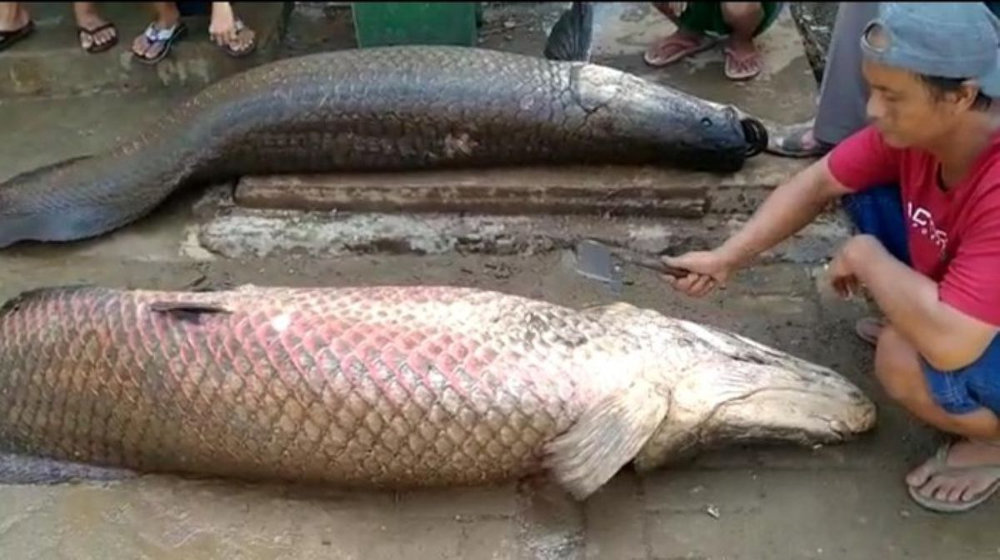
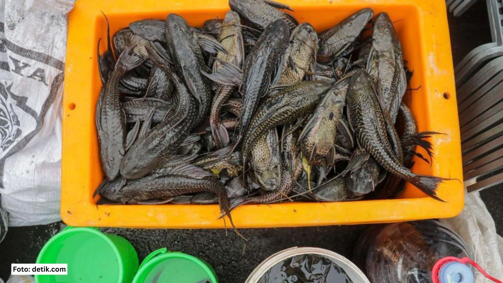
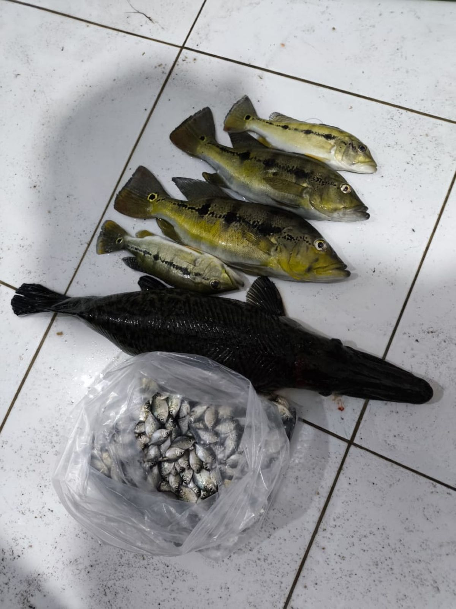

Berita Utama KKPArapaima, Ikan Raksasa yang Termasuk Invasif
Arapaima merupakan ikan predator air tawar berukuran besar yang termasuk jenis ikan berbahaya dan merugikan serta dilarang dibudidayakan atau diedarkan di Indonesia.
Artikel dan Publikasi
Berita pilihan mengenai ikan invasif, dampaknya terhadap ekosistem, serta langkah pengawasan peredarannya di Indonesia.

Berita Utama KKPArapaima merupakan ikan predator air tawar berukuran besar yang termasuk jenis ikan berbahaya dan merugikan serta dilarang dibudidayakan atau diedarkan di Indonesia.

Edukasi LingkunganIkan sapu-sapu menjadi perhatian karena kemampuannya mendominasi habitat perairan dan menimbulkan dampak ekologis bagi spesies lokal.

PengawasanKKP memperketat pengawasan terhadap perdagangan ikan invasif melalui media sosial untuk mencegah peredaran dan pelepasan spesies berbahaya ke perairan umum.
Foto monitoring, identifikasi, pemeriksaan, dan pengawasan tersedia pada halaman Galeri.